〜 そして伝説のライダーへ 〜
＊「鬼王を倒す冒険者を求めます。そなたの脚を、貸してくれませんか。」
* "I seek an adventurer to defeat the Ogre King. Will you lend me your legs?"
8人の主人公＝8つのトレーニングプラン。その日のメニューで選ぶ
Eight heroes = eight training plans. Pick one for today's workout
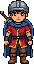
戦士Warrior総合強化All-Round Power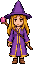
魔法使いWitch持続力Endurance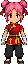
武闘家Monk基礎づくりFoundation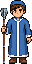
僧侶Priest長距離Long Haul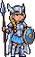
ワルキューレValkyrieVO2maxVO2 Max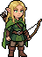
エルフElfスプリントSprint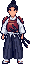
侍SamuraiスイートスポットSweet Spot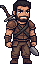
傭兵Sellsword登坂Climbing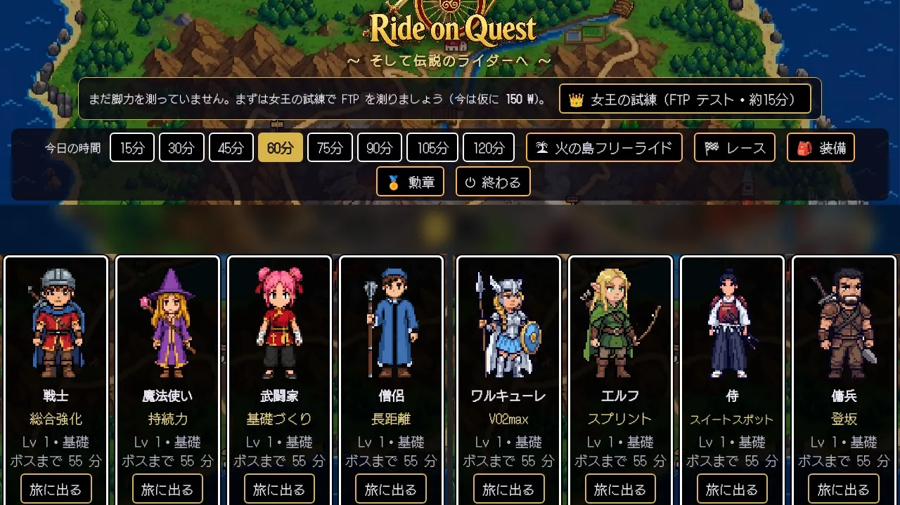
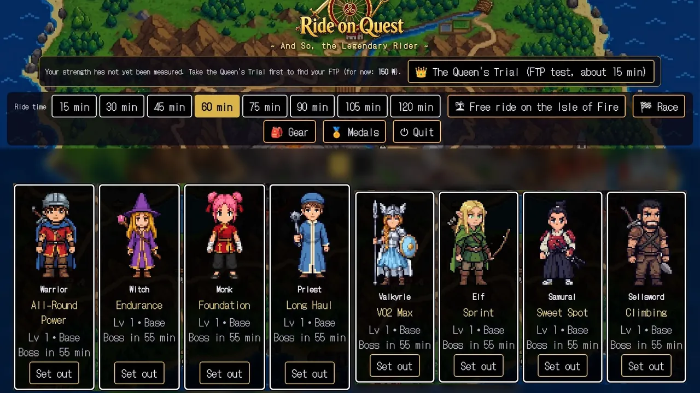
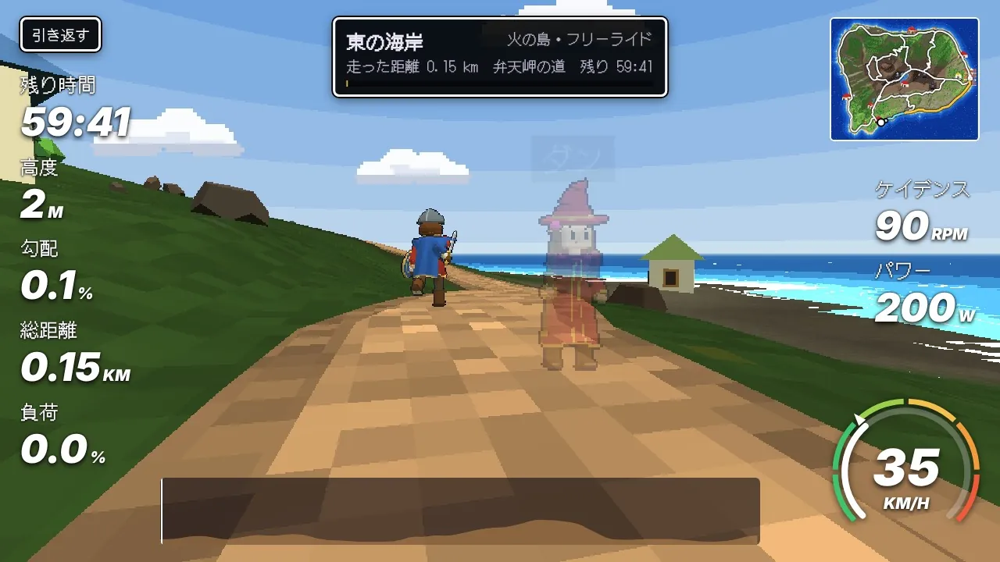
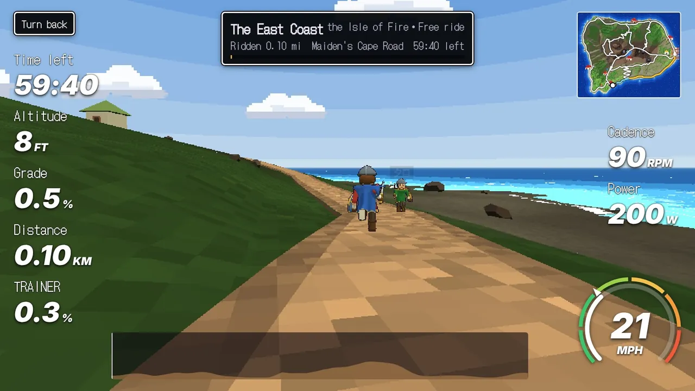
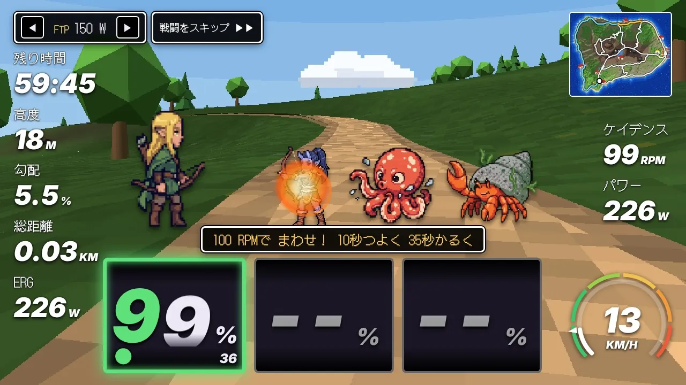
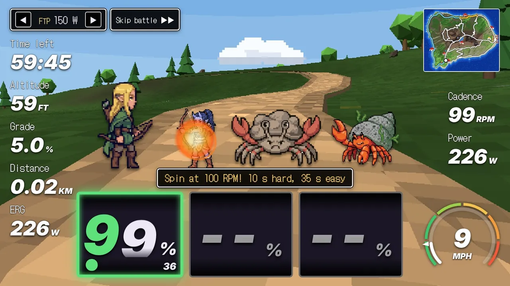
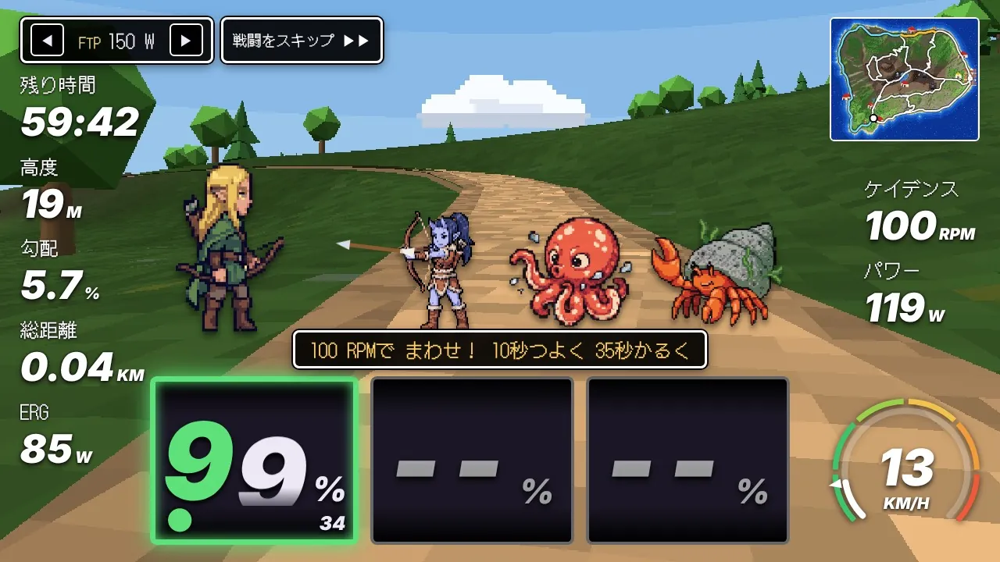
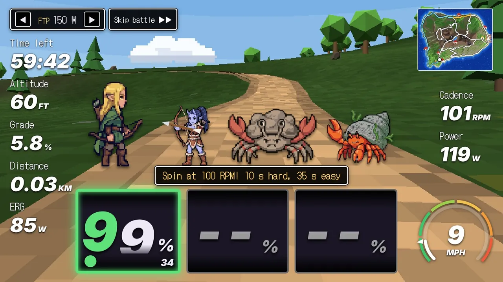
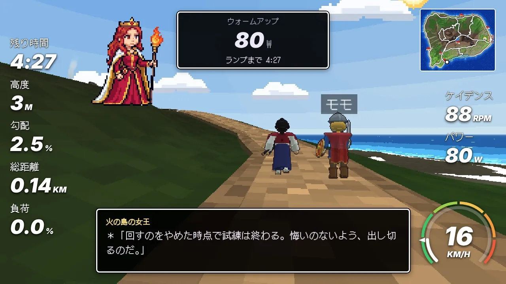
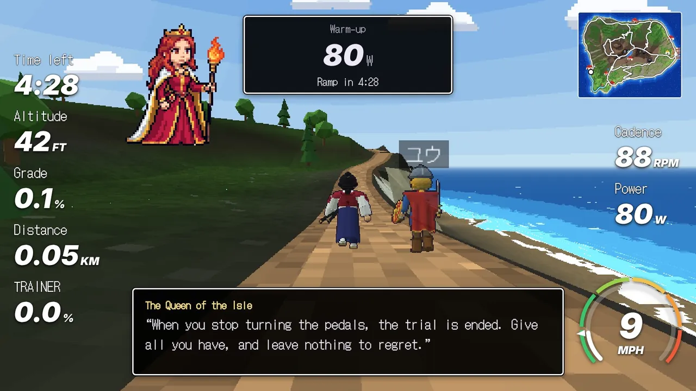
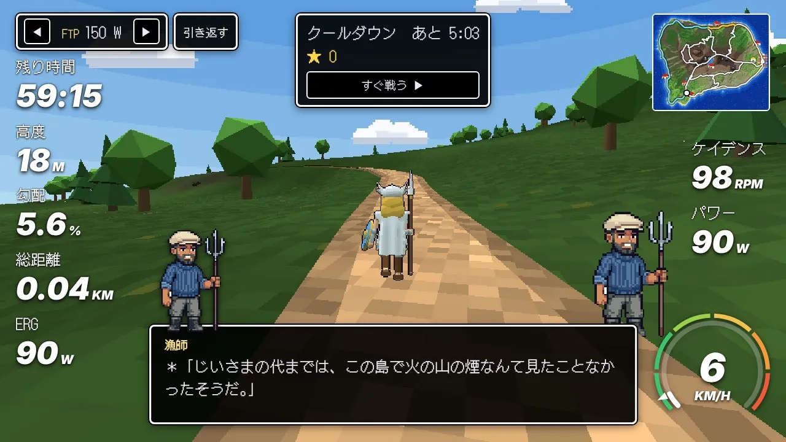
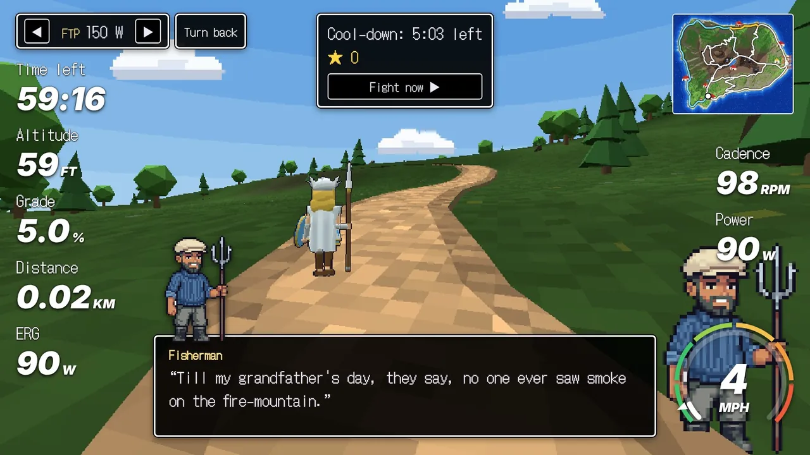
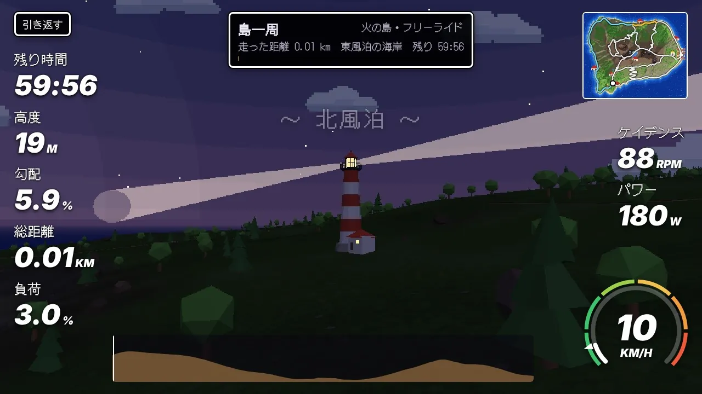
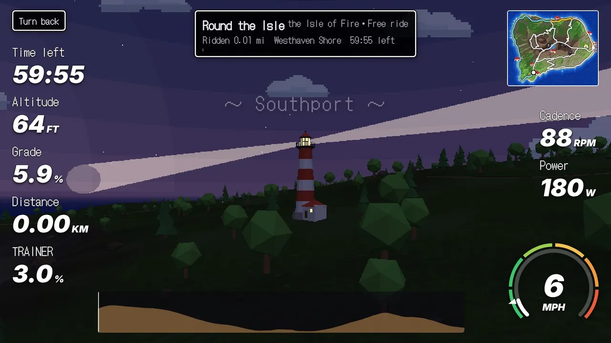
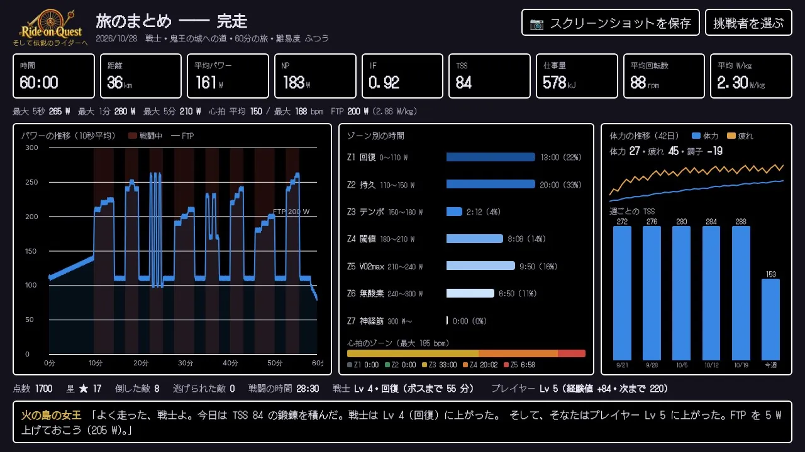
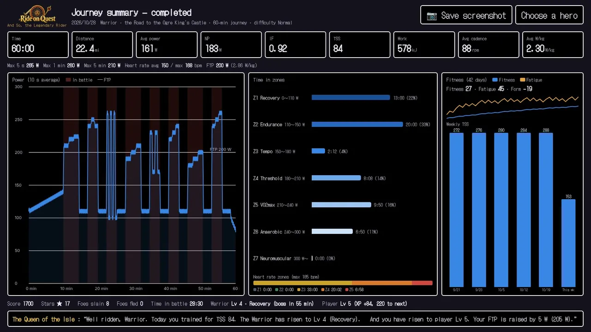
ベータテスターを募集中です。応募は今から受け付け、試し用の URL は11月6日にメールでお送りします。
Beta tester applications are open now. We will email you the link to the test version on November 6.
応募すると、遊ぶための URL がメールで届きます。